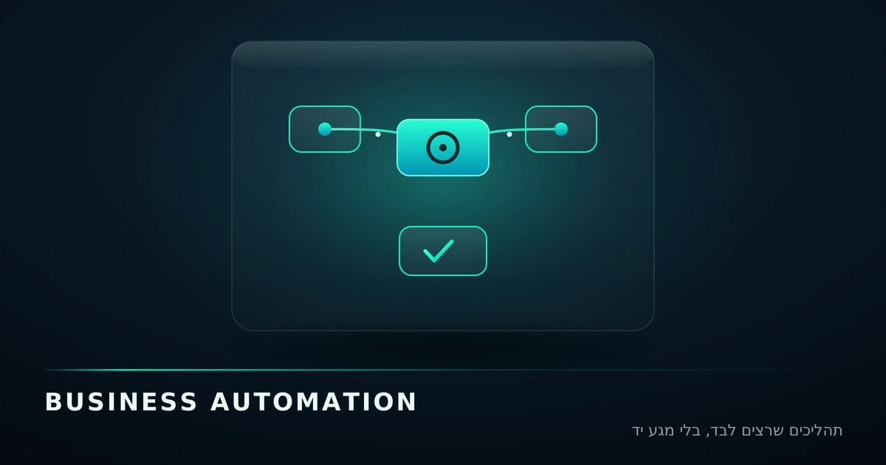
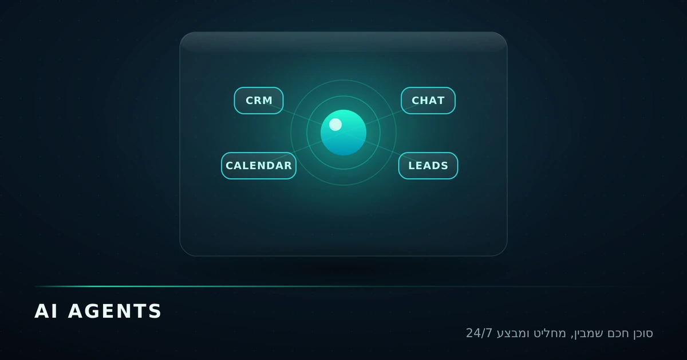
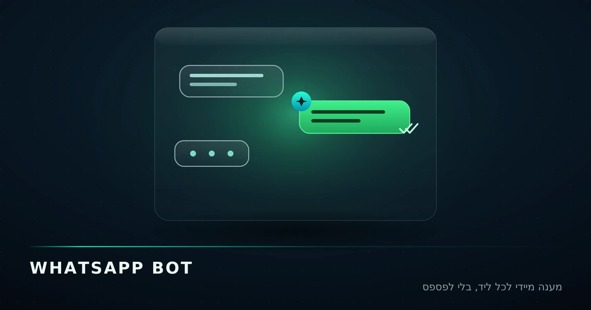
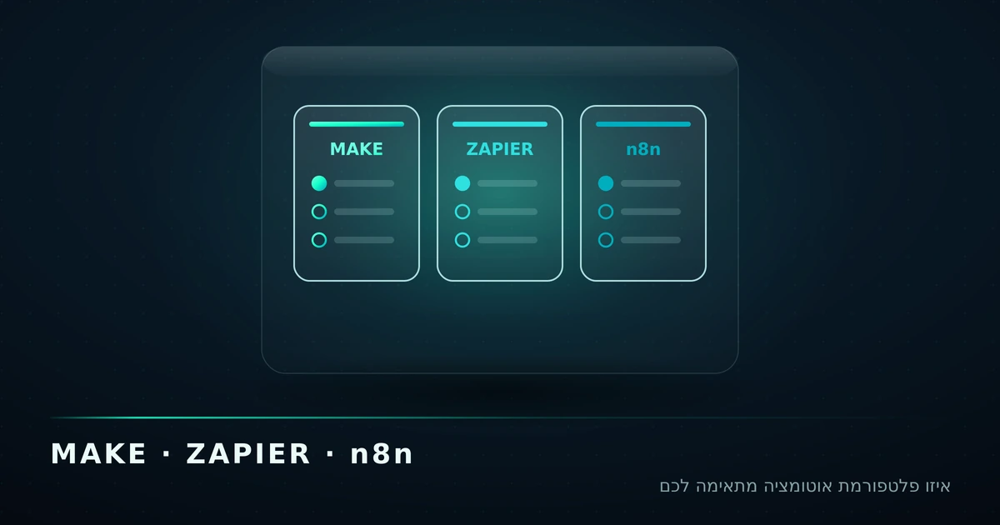
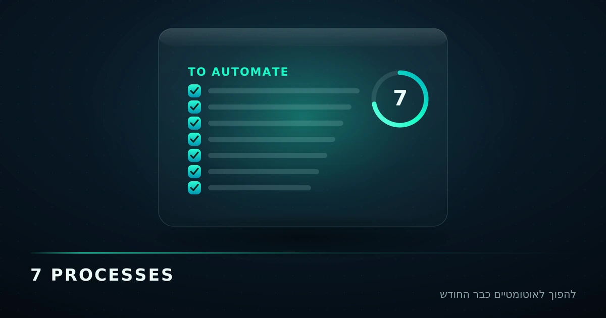

לעבוד חכם: מדריכים על אוטומציה ו-AI
מדריכים פרקטיים בעברית — בלי באזוורדס ריקים: איך אוטומציה עסקית, סוכני AI ובוטים חוסכים לעסק שלכם שעות בכל שבוע.

אוטומציה עסקית לעסקים קטנים — המדריך המלא ל-2026
מה זה אוטומציה עסקית (Business Automation), כמה זמן וכסף היא חוסכת, ואיך מתחילים בלי ידע טכני — מדריך מעשי לעסקים קטנים ובינוניים בישראל.
📅 12 ביוני 2026 · ⏱ 7 דק' קריאה
סוכני AI לעסקים: למה צ'אטבוט רגיל כבר לא מספיק
ההבדל בין צ'אטבוט לסוכן AI (AI Agent), מה סוכן חכם יכול לעשות בעסק ישראלי קטן, ואיך מטמיעים אותו נכון — בלי להפחיד את הלקוחות.
📅 11 ביוני 2026 · ⏱ 6 דק' קריאה
בוט וואטסאפ לעסק: כך תפסיקו לפספס לידים ב-2026
מדריך לבוט וואטסאפ עסקי: מה ההבדל בין WhatsApp Business לבין WhatsApp Cloud API, מה בוט חכם יכול לעשות, וכמה זה עולה לעסק קטן בישראל.
📅 10 ביוני 2026 · ⏱ 6 דק' קריאה
Make, Zapier או n8n? כך בוחרים פלטפורמת אוטומציה לעסק
השוואה מעשית בין שלוש פלטפורמות האוטומציה המובילות — Make, Zapier ו-n8n: מחירים, עקומת למידה, גמישות, ומה מתאים לעסק קטן בישראל.
📅 9 ביוני 2026 · ⏱ 8 דק' קריאה
7 תהליכים שכל עסק קטן יכול להפוך לאוטומטיים עוד החודש
רשימה מעשית: 7 תהליכים עסקיים שחוזרים על עצמם — מניהול לידים ועד גבייה — שאפשר להפוך לאוטומטיים מהר, עם הערכת חיסכון לכל אחד.
📅 8 ביוני 2026 · ⏱ 5 דק' קריאה